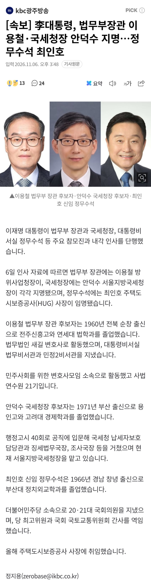
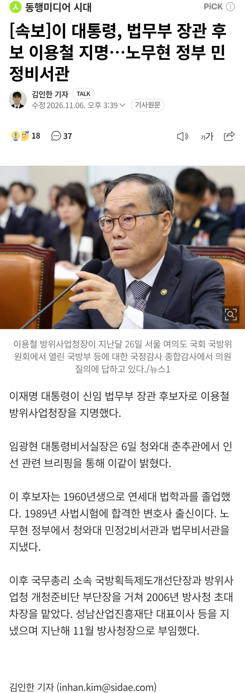

李대통령, 법무부장관 이용철·국세청장 안덕수 지명…정무수석 최인호.gisa이 대통령, 법무부 장관 후보 이용철 지명…노무현 정부 민정비서관.gisa출처: 이슈 갤러리 [원본 보기]
댓글
수집 당시 댓글 35개
땨뗘(봇) · 11.06 19:04:00
ㅇㅇ · 11.06 19:04:51
ㅇㅇ · 11.06 19:04:52
ㅇㅇ · 11.06 19:06:42
헌트 · 11.06 19:06:49
야룽이 · 11.06 19:06:59
· ㅇㅇ · 11.06 19:09:28
ㅇㅇ · 11.06 19:07:03
ㅇㅇ · 11.06 19:08:34
ㅇㅇ · 11.06 19:08:56
ㅇㅇ · 11.06 19:10:10
ㅇㅇ · 11.06 19:12:26
ㅇㅇ · 11.06 19:13:50
ㅇㅇ · 11.06 19:14:00
ㅇㅇ · 11.06 19:16:00
DRAGON-LEE · 11.06 19:23:34
· ㅇㅇ · 11.06 20:40:18
ㅇㅇ · 11.06 19:25:24
ㅇㅇ · 11.06 19:30:05
Dd · 11.06 19:32:02
ㅇㅇ · 11.06 19:32:40
ㅇㅇㄱ · 11.06 19:36:34
ㅇㅇ · 11.06 19:36:44
ㅇㅇ · 11.06 19:49:16
ㅇㅇ · 11.06 20:10:42
ㅇㅇ · 11.06 20:17:54
ㅇㅇ · 11.06 20:19:36
ㅇㅇ · 11.06 20:40:08
꼴갤러 · 11.06 20:41:11
ㅇㅇ · 11.06 20:43:48
ㅇㅇ · 11.06 20:49:45
ㅇㅇ · 11.06 20:54:28
XX · 11.06 20:59:12
ㅇㅇ · 11.06 22:18:26
ㅇㅇ · 11.06 23:17:02